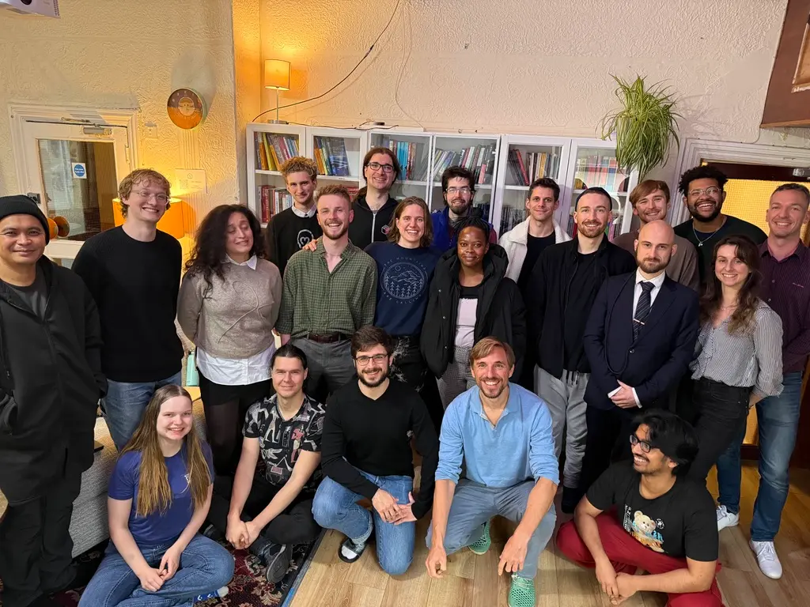
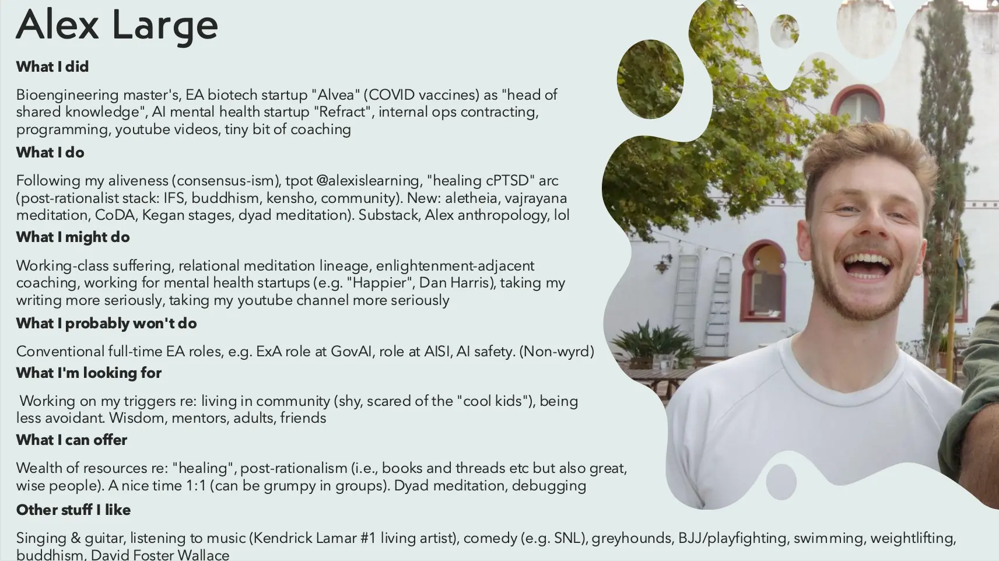

- 2025-10-20
- It’s funny being back at the EA Hotel, because in the past I’ve been a pretty grumpy bastard whilst living here
(A) Why so grumpy in the past?
1. ~Dislike of Effective Altruism
- I discovered the EA movement long before I was an adult (I mean, I feel like I have become a true adult, Kegan 4, in the last like, 4 months, lol)
- I was ~21, had no idea what to do with my undergrad which I didn’t care much about (biomedical sciences), and a friend recommended 80,000 Hours, and as I didn’t have a worldview or role models or anything, I pretty much just slotted the EA world-view into my head
- The problem being that it (by definition) didn’t come from within, it was an external narrative. To keep a long story short, it felt grindy and non-intrinsic (of course) but I didn’t have the skill to realise this, plus because EA is kind of totalising/moralistic (ofc), it was very difficult to drop it, because it felt like choosing to be a Selfish person who doesn’t care about Suffering and etc
Reframe → I dislike immature non-adults being totalised by EA
- If you’re an adult, and have the ability to like, think critically, then EA is a good possible way to Do Good
- It’s not that it’s a bad movement, and it’s not that it’s coercive, if you have the skills required, your own boundaries and values, etc
- (The problem here is that Robert Kegan said that ~60% of people never reach adulthood (that is, move beyond Kegan 3), so in the world as it currently is, many EAs may get nerd-sniped by it too early)
- Being around EAs, I can have the story of “oh god, you’ve been totalised by this doomsday ideology, this didn’t come from you, you’re gonna burn out”, but actually, a lot of people here are (respectfully) genuine nerds who love maths and love rationality and etc, so actually, EA is a perfect fit for them, and they probably found it very exciting and didn’t need to self-coerce to get interested in it, to get interested in AI Safety and etc. Vs I felt like it was something that I should care about, and did care about a little bit, but not all the way
2. The hotel was gross
- The hotel was cluttered, bad feng shui (e.g., books piled up haphazardly rather than on bookshelves)
- I think that hardcore “rationalists” and Effective Altruists often don’t care about aesthetics, because they’re “too busy reducing p(doom)” to e.g. clean, declutter, etc. Which you can kind of see the logic in if you squint, but also, it just makes for a unpleasant environment innit
Good news - it’s improving rapidly!
- My friend Attila (who I met last time I was here) is now the executive director, and things have improved a bunch, and I’m very excited about his plan for the place
- E.g., simple stuff but - a bunch of clutter has been removed, every room is noticeably cleaner, the library has bookshelves, there are now community events like a “everyone does a 5 minute presentation about themselves” thing
3. It was the opposite of an intentional community
- There was no, like, “hey, we’ve had 4 new people join, so on Friday we’ll have them introduce themselves”, or anything like that
Again, Attila to the rescue
- On Friday there was the first ever “everyone does a 5 minute presentation about who they are” thing. Huge improvement, and that’s the lowest hanging fruit!

- 👆 Guest Introductions session 1
4. Non-consensus to be here
- In the past, when I’ve been here, there’s always been a grindy sense of internal conflict, of “ughhh, this isn’t it”, which I find impossible to ignore, and makes me a grumpy and intense presence
- Vs this time (and it’s only day 4!), I have total consensus to be here → it’s cheap, I have friends and possible mentors here, there’s a gym, it’s an improvement over living at my mums, it’s an improvement over travelling around like I just did (Spain → Oxford → Berlin → Hamburg → Berlin) (e.g., I have a bedroom here, lol). I’m not trying to find a long-term base right now, so this place feels great for possibly 3-12 months
5. Shy about being EA-adjacent
- I remember being shy about being on my computer in a coworking space and people seeing me faffing about with my non-EA shit, like writing in Obsidian or reading tweets or whatever
- Vs this time, thanks in large part to the “let’s all introduce ourselves” presentation session, I got to say “look I’m not really an EA and I feel kinda shy about that but here’s the stuff that I’m working on and care about”.
- That plus feeling more like a grounded adult with my own world-view this time feels pretty great

- 👆 My intro slide
(B) What am I excited about?
Fitness
- This is a shallow one, but fuck me am I excited to have a gym in the building - I want to get the strongest I’ve ever been, I want to do some weight lifting every day, I want to get into running and get my cardio to a really good place
- There’s also a really great gym a 10 min walk away with a swimming pool and sauna and even classes etc
- Ooh and there are 2 BJJ places within a 20 min bike ride radius 👀
Mentorship
- I love Attila, the executive director of the hotel - we became friends last time I was here. To live with a possible mentor and someone who is very much on my side will be sick
Working on codependence and comfort in community
- Since my first year of uni I’ve always struggled living with people → I spent a lot of my childhood in a very high conflict household in my bedroom alone, so I never really got the “hanging out with people in a house” thing down. In fact, I realised at uni that I found even just being in the kitchen with someone else to feel unsafe and unpleasant. This has lessened somewhat but is still definitely part of my experience. E.g. at Ship It Week, I’d skirt around the edge of connection, having a quick chat and then moving on, always kind of uncomfortable to join a group, etc.
Long-term base
- If I lived here for 6+ months, getting to know people more and more over time, working out regularly, working on myself via e.g. Codependents Anonymous and IFS etc, getting mentorship from Attila etc, I think really great things could happen
Stability
- I can grow and work and etc much easier when I have a bedroom and a place to work that isn’t a bedroom and etc. I’m excited to be able to get a stable routine going and be useful - as an enneagram 3, a feeling of competence and usefulness is very important to me
(C) Worries
- Feeling like an outsider, feeling like not one of the cool kids, feeling like I can’t just hang and be chill, are all key things for me, and so far arriving at a place where people already know each other + have some shared context (EA) that I don’t really care about, is definitely making this a bit of an issue. I’m hoping it’s a skill issue that I can address (e.g. by doing 1:1s, by just trying (e.g. by attending board game nights just to see, by making things happen that I want to happen) etc)
(D) Opportunities
- Perfect playground for noticing aliveness. The nerds (lovingly) are talking about math shit at dinner? Leave or talk to someone else
- Perfect playground for noticing/cultivating desires, e.g., I can run events/workshops that I want, propose 1:1s, propose film nights, music listening nights, etc etc